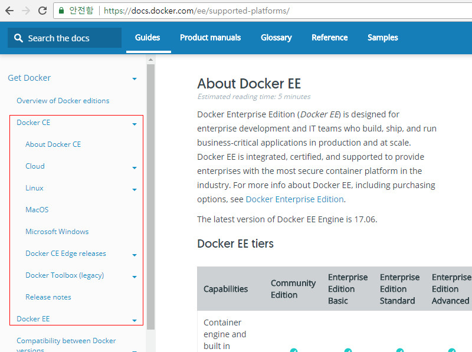

설치
https://www.docker.com/
Docker는 Windows, MacOS, Linux에서 모두 사용이 가능하고 각각 설치방법이 다르고 버전에 따라서도 변경되므로
최신버전의 Docker를 설치하려면 공식사이트의 Documentation을 보는것이 좋다.
위의 링크에 들어가서 Support > Documentation메뉴를 클릭한다.
왼쪽의 서브메뉴를 보면 Get Docker > Docker CE메뉴에 들어가면 다양한 버전의 설치방법이 설명되어 있다.

본인은 Ubuntu 16.04.1버전에 설치한다.
우선 설치를 위해 저장소를 추가해 준다.
add-apt-repository \
"deb [arch=amd64] https://download.docker.com/linux/ubuntu \
$(lsb_release -cs) \
stable"
패키지 목록을 갱신한다.
apt-get update
docker를 설치한다.
apt-get install docker-ce
설치가 완료되고 아래와 같이 docker -v명령어를 입력하면 설치된 버전정보를 볼 수 있다.